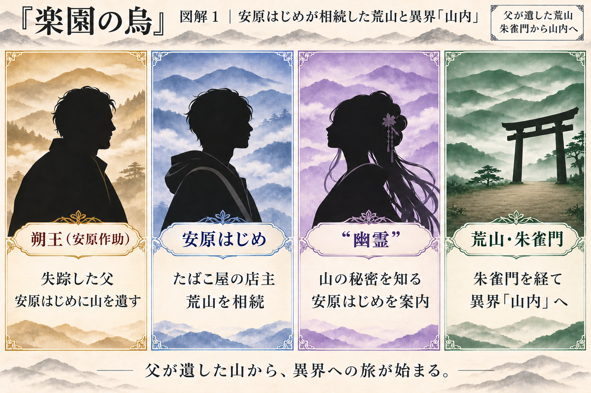
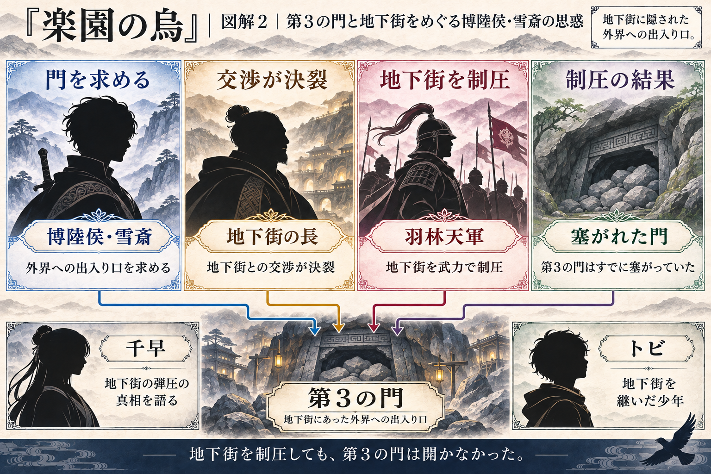

『楽園の烏』 八咫烏シリーズ 巻七 （第二部第一巻）
第一部から時を経た山内を舞台に、新たな人物と謎から第二部の物語が始まる第7巻。
このページでは、『楽園の烏』の物語を章ごとに振り返りながら、登場人物の行動や事件の流れ、物語の最後に明らかになる真相まで記録しています。
物語の結末を含むネタバレがあります。
① ストーリー
安原はじめが親から山を相続した。
父親は朔王（安原作助）。
現在、三者から山の売買に関しての打診を受けていた。
途中、幽霊にあの山の秘密を聞いた。
回答は桃源郷。
はじめの乗ったトロッコはガタゴトと動き出した。到着した先は、確かに桃源郷と呼べる異界『山内』だった。

② あらすじ
1８0万部異世界ファンタジー、第二部開始！
＜シリーズ累計180万部突破＞
「八咫烏シリーズ」新章スタート！
新宿の片隅でたばこ屋を営む青年・安原はじめ。7年前に失踪した父から「山」を相続した途端、「山を売ってほしい」という依頼が次々と舞い込み始める。そこへ現れたのは、“幽霊”を名乗る美しい女。山の秘密を知るという美女に導かれ、はじめはその山の“中”へと案内される。
その場所こそは、山内と呼ばれる異界。人の形に変じることのできる八咫烏の一族が統治する世界だった――
猿との大戦（『弥栄の烏』）より20年の時を経て、物語は現代の風景から始まる。
舞台は次第に「山内」へと移り、動乱の時代を生き抜いた八咫烏たちの今、
そして新たなる世代の台頭が描かれる。
第1部以上のスケールで展開される、傑作異世界ファンタジー。
<阿部 智里>先生 インタビュー
「本来ならば昨年発売する予定でしたが、納得いくものが書けず、セルフ没にしてしまいました。読者の目を意識し過ぎて、プロットが在るべき姿でなかったからです。試行錯誤するなかで、ふと我に返って原稿を読み返したら、第二部から読み始めた人には全然わからない内容だろうと思いました。第一部で築き上げた“貯金”を取り崩していけば、シリーズは先細りするしかありません。
『楽園の烏』は単なる第一部の延長ではなく、新しいキャラクターによる、新しい物語でもあることを示す必要がありました。そんな風に読んでもらえるのなら3年間、書きあぐねた甲斐があります」
タバコ屋の店主・安原はじめは、失踪した父から山を相続した。すると山の買い取りを希望する胡散臭い業者が続々と彼の元を訪れるようになり、山の秘密を知るという謎の女性まで現れた。彼女の手引きで、はじめが送り込まれたのは、八咫烏と人喰い猿の大戦終結から約20年後の山内。
山内の民は八咫烏の族長「金烏（きんう）」から政治的実権を委ねられた「博陸侯（はくりくこう）」こと雪斎（せっさい）に心酔し、その手腕を賞賛するが――。
「第一部からの読者はキャラクターの変化に愕然とするかもしれませんが、元々こうなる予定で伏線をちりばめてきました。驚く人もいれば、はたまた『やはり』と思う人もいる、そんな塩梅だといいですね」
※ 悪魔の雪斎は、第一部からその片鱗を見せていた。
阿部さんは『烏に単は似合わない』から一貫して、被害者と加害者、敵と味方など相反する立場が容易に入れ替わり得ることを描いてきた。
「誰しも、どんなに物事を色々な視点から考えようと努力しても、一面しか見えていないことが往々にしてありますよね。だから、それまで見えていたのとは違う面が暴かれる衝撃を疑似体験できるような書き方ができたら、小説として面白いのではないかと思って。八咫烏シリーズ全篇を通して書いていきたいテーマのひとつです」
『楽園の烏』と同時期にシリーズ外伝となる短篇集『烏百花 蛍の章』の文庫版も発売された。両方購入すると、スピンオフの新作短篇「かれのおとない」が読める特典が付いてくる。
「この短篇は終戦直後にとある主要キャラが亡き親友の遺族を訪ねる話なのですが、『楽園の烏』の前に読んでも後に読んでも“空白の20年間”をめぐる謎が深まるはず。読者が混乱してくれるのが楽しみです（笑）。2人の関係性について作者があれこれいうのは無粋なので、小説を読んで想像してもらえたら」
④ 章ごとのストーリー
第一章 逃避行
安原はじめが親から山を相続した。
固定資産税を払えるだけの維持費のおまけつきである。
父親は朔王（安原作助）。
一代にして巨万の富を築いたその手腕から、「経済界のぬらりひょん」とまで呼ばれた実業家である。
海外と思しきいかにもな賭場やカジノにも連れて行かれた記憶があるし、競馬、競輪、競艇、オートレース、パチンコと、思いつく限り全ての大人の遊びに付き合わされた。
山の売買に関して、父親からある条件が出されていた。
『どうしてこの山を売ってはならないのか分からない限り、売ってはいけない。』
安原はじめは「たばこ屋 カネイ」を買い取った。自販機が主な収入源である。
大量の書類にサインし、正式にはじめが山の名義人兼管理人になった翌日のこと。
「あの山を売ってくれませんか」胡散臭い笑顔のビジネスマンがはじめのもとを訪ねて来た。
現在、三者から山の売買に関しての打診を受けていた。
周辺住民からは、「荒山あれやま」と呼ばれているらしい。
別に幽霊と名乗る綺麗な女性が現れた。
「実は、あなたのお父様から頼まれておりまして」
「あなたに、あの山の秘密を教えて差し上げて欲しい、と」
百貨店の荷物運搬用の大きなトラックに乗って、２人で荒山に向かった。
途中、幽霊にあの山の秘密を聞いた。
回答は桃源郷。
幽霊は言う。
「私だけでなく、私の両親も、私の大切な人達も。今、追って来ている彼らが絶対的に信じるものによって理不尽に蹂躙され、殺されてしまったんです。」
幽霊は多分、紫苑の姫。 そうすると浜木綿も悪魔の雪哉に殺されたのか？
「私はなんとしても、私と、私の大切な人達を殺したものを、この世から滅さなければなりません」
巨大な鳥居の下を潜ってからサイドミラーを見ると、いつの間にか随分と登ってきたようで、山の裾野には宝石をばらまいたかのような夜景が広がっている。
「あれがあなたの山です」
幽霊から、大きな木箱に入るよう指示された。
大きな木箱の中を覗き込めば、申し訳程度の小さな座布団と、飲料水が入っているらしいガラス瓶が見えた。
携帯電話を持ち込めば壊れてしまうと言われた。
「いずれまた、お会いしましょう」
幽霊としてはその後、二部第四巻「望月の烏」まで現れず、「望月の烏」の最後の最後に登場した。
はじめの乗ったトロッコはガタゴトと動き出した。到着した先は、確かに桃源郷と呼べる異界『山内』だった。
自然かつ完璧な現代日本語を話す悪魔、博陸侯・雪斎と面談した。
第二章 異界
悪魔の雪斎が山の利権に気づいた時には朔王（安原作助）は行方不明であった。
雪斎は、山内の烏を騙すため、宿敵の猿には生き残りがいると、自分の都合のいいように嘘を吹聴していた。
安原はじめは、雪斎が悪だと初めから気がついており、雪斎には金以上に俺にとって価値のある物を用意しろと要求した。
本当に価値のあるものをくれたら、権利を譲ると。
そしてしばらく逗留すると告げ、留学経験者の頼斗を案内係として指名した。
最初の訪問先は中央花街だった。
３本足の馬（巨大な烏）が３羽用意され、護衛たちが５人いた。
かつては外界と同じ馬もいたようだが絶命したと説明を受けた。
山内は中央山の山頂にいる山神の荘園で、金烏は荘園の管理者であると。
初代金烏の子供たちは、土地を４つに分けて受け持ち、金烏を手伝いながら仕えていると。
楽人の東、商人の南、職人の西、武人の北。 ４領の特産物は山神に奉納するため中央に送られてくる。
猿との大戦の影響で、神域の扉、禁門は常に閉じられている。
第三章 貴族
はじめが何者かに襲われて、頼斗は悪魔・雪斎と小悪魔・治真に報告に行った。
権利譲渡の交渉を含むはじめへの対応は頼斗に一任すると命が出た。
地下街に逃げ込んだ。 千早が語った。
悪魔・雪斎の取り締まりは苛烈で、抵抗する大人はことごとく皆殺しにされたという。
貴族の頼斗は単純で、坊で、世間知らずなばかりでなく、真実をほとんど知らなかった。
逆に真相を数日で理解していくのは、安原はじめであった。
このままだと悪魔・雪斎に殺されると。
はじめは山内の秘密を知った。 山を売ってしまえば用無しになる。
親父は７年前から行方不明である。
親父の姿が最後に確認されたのは、遺産管理を任されている弁護士に山の譲渡に関する遺言を預けたときで、その後、失踪した。
そして山の中にはこんな立派な異界があったという事実。
無関係だと言う方が難しい。
親父の行方が知れたらラッキー。 ここに来た理由は他にある。
一緒にいて貴族の見える世界は理解した。 お前（頼斗）とは違う立場の人間が見える世界が見たいと、頼斗に要求した。
頼斗が承諾すると、千早を護衛に雇う金を出してくれとさらに要求した。
迦亮が、襲撃をしてきたのはここにいるガキの身内だと告げにきた。
ただ、その襲撃前に本物の猿の毛皮と武器を使って猿のように見せかけて花街で安原はじめを襲ったのは迦亮。
迦亮は悪魔・雪斎に操られる山内衆の工作部員。
平民階級出身で、頼斗よりよほど世間を理解している。
はじめが山の権利者であることが、地下街の連中に漏れていた。
少数の生き残りは、ここだと見込んで集結し、馬を操って、はじめを狙ってきた。
そして、現在残っている地下街の大人は全員、悪魔・雪斎とつながっていると知らされた。
現在地下街の生き残りの大人は、子供たちのごっこ遊びに付き合い、朝廷の意思のもとに働く大人だけ。
少数の危険分子は、分散し外で息を潜めてひたすら取り締まりの目を盗んで生活している。
第四章 地下街
地下街のリーダー・トビと会話した。
外界の武器は山内には持ち込めない。
頼斗が、悪魔である博陸侯・雪斎の慈悲はあまねくいきわたっているとトビに説明した。
でもトビの父親は赤紐＝山内衆に殺されたと答えた。
現在山内衆を牛耳っているのが、悪魔である博陸侯・雪斎であり、地下街の烏たちは、雪斎に殺された。
千早が語り出した。
頼斗は、トビが雪斎を分かってないと言うが、俺に言わせれば、お前の方こそ雪斎を分かっていない、と。
悪魔である博陸侯・雪斎が地下街を襲ったのが８年前。 代替わりしてすぐである。
手燭に火を灯した千早が狭い隧道を先導しながら外界語（人間）で語る。 真相を教えてやると。
千早の次にトビ・はじめ・頼斗が岩壁の中を歩く。
悪魔である博陸侯・雪斎が地下街を一方的に弾圧した。
真の金烏（奈月彦）の代替わり後、相互不可侵の密約は反故にされた。
当時幼かった金烏代（凪彦）に代わり、当時の地下街の長・鳶と交渉したのが悪魔である博陸侯・雪斎である。
交渉は決裂。 不法だと言って、谷間の解体を命じ、地下街の長と悪魔は衝突した。
谷間の賭場や女郎宿に退去の命令が下され、羽林天軍が送り込まれ殺された。
谷間の住人が地下街に逃げ込み、親分衆たちと羽林天軍が戦った。
豊富な水が湧き出るうえ、地下街は網の目のように広がっていたため、戦いは五分五分であった。
だが卑怯な悪魔である博陸侯・雪斎は水場に大量の下剤を入れ、親分衆たちを毒殺した。
谷間の住人に手の者を紛れ込ませたのだ。
そして羽林天軍にて制圧、逆らうものは皆殺し。
当時の地下街の長・鳶は最後まで戦い殺された。
死ぬ間際に、鳶は５歳の子供を「トビ」と名付け、後を託した。後を継ぎ、地下街を立て直せと。
悪魔である博陸侯・雪斎が地下街に戦いをふっかけたのは、治安維持が目的ではない。
もっと切実な問題があった。
千早が狭い隧道の奥で手燭を掲げた。
「はじめさん、これが第３の門です。外界に出るための３つ目の出入り口」
１つ目は、朱雀門。 天狗との交易に使うための門であり、はじめが山内にやってきたのもこの門。
２つ目は禁門。 山内から神域へ至る門で、現在は山神によって封鎖されている。
先代の真の金烏（奈津彦）は実際に使用したことがある。
山内では鉄と塩が取れない。 第３の門は実在した。
猿との戦いの際、実際に禁門と同様の神域に繋がる第３の門以外の抜け道が存在した。 猿がそこから山内に侵入して攻撃してきたから分かった。
そのルート（抜け道）を監視するも、禁門の閉鎖と同時に消滅した。
第３の門だけは地下街にあったため、消失が確認できなかった。
悪魔である博陸侯・雪斎は第３の門が欲しかった。 だから地下街を攻撃し、無残にも皆殺しにした。 底知れぬ悪魔である。
当初、天狗に多くの報酬を渡して、外界に游学にいった。 次第に多くが游学するにあたり、自由になる外貨が必要となった。
鳶との交渉が決裂し、悪魔である博陸侯・雪斎は無理やり地下街を襲った。
しかしそれほど大規模な事をやったのに、第３の門は塞がっていた。
建前と違い、実際は損得で多くの烏を殺した。
これが悪魔の正体。 自分の損得で同胞を皆殺しにして平気な烏である。
その後、明鏡院へ行くことになった。
出家した金烏宗家が院主を務めている。 金烏から還俗を認められないと結婚もできず、子供ももうけられない。
明鏡院・院主 長束。
長束は朔王の事を語った。
朔王には目を見張るような英雄的資質があった。 はじめの父である。
思わず頭を垂れたくなる恐ろしさと、この男に気に入られたいと強烈に思わせるような魅力を持ち合わせていたという。
無秩序な地下街で親分衆をまとめ、体制を作った。
この朔王が、幽霊の紫苑の宮を手助けした。 ただ者ではないし、金烏の系列に関係するのだろうか。
非常に興味深いが現時点では判らない。
第五章 慈悲
やっとぼんくらな頼斗にも、はじめに同行して花街で聞いた言葉や、明鏡院の長束、女工場の女たちが言っていた言葉の意味が理解できた。
はじめの問いに答えながら、頼斗の背後にいる悪魔・博陸侯に対して無難な回答を選んで答えているのだ。
女工場の視察後、南領との領境に設けられた関所に宿を取った。
食事と湯浴みを終えて部屋に戻ると、大宅座の舞台で踊り始めたところであった。
宿は貸し切りで、神官や客を装った山内衆が別室で待機している。
はじめは、山内は楽園かと聞かれ、俺の目は節穴じゃないと答える。
女工場も護衛も名目で見張りがつき、自由はない。 そして誰もが全く不平不満を漏らさない。
頼斗は現実から目をそらし、中央花街のやつらは不平がないように装わざるを得ない。と指摘した。
小さな不満一つ言えないほど、状況は不健全だ。自由はまったくなく、逃げることもできない。
東領の近くの村が猿に襲われたとの情報が入り、はじめ達はすぐにそこに向かった。
村民は山内衆がとっくに中央へ護送したと兵の詰め所で聞いた。
後追いは、山内衆の迦亮に止められ、しぶしぶ諦めた。
トビの仲間たちは、さほど悪いことをした訳でもないのに足を斬られ、馬となってこき使われている。
地下街の連中をご丁寧に３分割して管理するのは、それぞれを人質とするためだ。
子供と女と男。 どこかが下手を打てば、どこかが割を食う。
男が反乱を起こせば、女は盾にされる。 女が反抗すれば罪として子供たちの食事供給が減らされる。
地下街は、子供たちが子供を育て、人質を押さえ、馬を育てる場所である。
これ以上大きくなったら手に負えなくなると判断された者から順に連れていかれ、足を縛り馬にされる。
何の罪もない者を馬にして、奴隷のようにこき使う。
そして、人質を使い逃げられないようにがんじがらめにする。
本当の悪魔は雪斎その人。 合理的に事を進めるが、真の悪党である。
猿に殺された村人の傷は、見事な刀傷であった。 大戦の際の猿が暴れた傷とはまったく違う。
頼斗はやっと悪党の真の正体を理解した。
ただ、そうと分かっても善良な側につくか、もしくは悪に加担するかは現時点でも将来的にも未知数だ。
大体悪魔の真相がわかったところで、はじめ・千早・トビ・頼斗４人は地下街に戻った。
上手い事、トビがはじめだけを階下に連れていった。
首元にアイスピックを突き付けられ、階下へ誘導されると、仲間たちが待っていた。
襲ってきた連中と通じていたのはトビだった。
トビはなぜか外界語（人間）が理解できているようだ。
終章 置き土産
安原はじめが山の権利者であると奴らに知らせた人物が不明。
地下街から逃げた破落戸と子供が結託して仕掛けてきた。
地下街にいる大人には明確な人質がいる。
互いに監視し合い、怪しい動きがあれば報告させ、報酬を与えていた。だが、今回は報告がなかった。
朝廷は子供たちに安原はじめを取られてしまった。
朝廷の監視役である地下街の三治は、今回の件は何も知らないと言った。
トビは飛車を襲撃してきた連中とグルだった事になる。
三治は、昔、声をかけてきた男がいて、名は重蔵だと語った。
トビの要求は馬と女たちの同時解放。
すでに、本日正午に馬と女工場の女たちは雪斎により解放された。
トビが人質となり、明日の正午にはじめと身柄を交換するのが条件。
その時になったら人質が連れてこられる場所を教えると約束した。
分断された家族や仲間が人質なので、同時に解放する必要があった。
トビの真意と重蔵の思惑は違う可能性がある。
悪魔の雪斎がトビに報告した。 女工場の半分は工場に残った。
自らの意思で今の暮らしを選んだ。元は女郎だ。 半分は逃げた。
地下街ではじめの捜索は難航した。 三治の案内で頼斗と千早が見つけた。
大人２人と子供１人が言い合いをしていた。 重蔵とタカだ。
重蔵ははじめには使い道があるから解放せず、交換にも連れていかないと言った。
頼斗と千早が重蔵ともう１人を制圧し、はじめを救った。
はじめを救出した頼斗と千早は人質交換の現場へと急いだ。
千早が鳥形になりタカを乗せる。 頼斗が同じくはじめを乗せる。
交換場所は、この前視察に訪れた建築途中の堤防だ。
斬足された馬が自分たち同様に堤防めがけて飛んでいる。
断末魔が聞こえる。 よくみれば、目が白っぽい灰色をしていた。
失速して乾いた土のうえに落ちていく。
すでに２０羽以上の馬が激しく翼を打ち地面でのたうちまわっている。
すでにこと切れているものもいた。
これ父ちゃん達だとタカが言う。
あの野郎、地下街攻略と同じ事をしやがった。 毒を飲ませたのだ。
悪魔は憎々しげに、養老羽虫の毒は遅効性で、効き目には個人差があると語る。
今戻ってきたのは、毒が早く効いた者たちだと。
悪魔・雪斎と小悪魔治真が現れ、頼斗達に語り掛けた。
そして理解する。 花街で猿に化けて襲撃してきたのは後輩迦亮だった。
はじめに対し、頼斗に接待させ、迦亮に脅しを担当させる。
猿の毛皮と武器は本物。 猿の死体から皮を剝ぎ取って作っている。
反対派の起こした事件を猿のせいにして、制圧し皆殺しにした。
必要だったと悪魔・雪斎はほざく。
東領の関所に近い村が焼かれ、村人が殺されたのは、猿ではなく山内衆の仕業だったという真相にたどり着く。
村は地下街の残党の拠点だった。 残党に協力した村人も同様に全員殺された。
悪魔・雪斎は容赦なく報復措置を取って皆殺しにした。
堤防の下で死にそうになっているものを指して屑だという。
悪びれることなく、屑を殺しただけだと言う。
根っからの悪党で、心は悪魔に支配されている。
それを堂々と宣言する。
同じ八咫烏を山内の腫瘍・猿だと、ゴミだと言う。
ここは楽園ではなく地獄だと笑っている。 狂っている。
その時、流暢な御内詞（鳥語）が「聞くに堪えない」とその場の空気を遮った。
父は方言がきつかった。
訛ったまま話されると周りは何を言っているか解らなかった。
ずっと一緒に旅を続けたはじめは方言はわかるようになった。
その方言がここの御内詞（八咫烏語）だと。
最初来たときは分からなかったが、徐々に思い出した。
はじめは、トビが人質の証拠だと持っていた物を今持っているかと尋ねた。
ネイティブゴールド、自然金のかたまり。 純度の高い金鉱山の標本だ。
これが未発見の鉱床のものと知れたらどうなるか。 サンプルは複数ある。
そしてはじめが一定期間生きていると確認が取れない場合、父の見繕った採掘事業の伝手にここの住所と一緒に送られる。
この金はまぎれもなく山内産である。 この山は穴ぼこだらけにされる。
はじめが殺されたら、この異界も道連れに無くなる。
父はすでに50年前外界で戸籍を得、一大財閥を築き、天狗すら手に入れられなかった山の権利を言葉巧みに手に入れた。
父、安原作助は人間ではない。 朔王だ。 はじめは朔。
はじめは、悪魔に帰してくれるんだろうなと確認した。 「もちろんです」と答えた。
何も手を打たずに、のこのこやって来たわけではない。
自分に何かあったらこの山が開拓されるよう、用意周到に仕組んでから来た。
朱雀門で、はじめを送り届ける役目を与えられた鳥天狗がはじめをトロッコに案内した。
その際、はじめは頼斗に一緒に来いと誘った。
頼斗は悪魔・雪斎に太刀を返上した。 小悪魔・治真にそれが何を意味するのかと詰め寄られた。
はじめが山内に来た目的は、父を探すことに加え、山を売ってもいいと思える相手を見極めることだった。
はじめは期待に応えてくれるものを探している。
「人の真価は困難なときに現れる。仕方ないとあきらめず、ちょっとでも楽園に近づけようとする。
そういう輝かしいものを見たい」と語る。
だから困難な今の状況で、貴族を優先し、率先して口減らしで山烏を殺していく雪斎は悪であり敵。
山内全体を純粋に守りたい人たち、真の金烏・内親王の紫苑の宮・皇后の浜木綿・真穂の薄・澄尾・長束・千早・翠寛など、正義を貫く善なるものに将来たどり着くのだろう。
頼斗は、太刀につけた符牒（ふちょう）に「山烏」という合言葉で、長期の潜入を悪魔・雪斎たちに伝えた。
まだ敵になるか味方に付くかはわからない。
悪魔・雪斎は、トビには裏で手を引く多少の知恵とそれなりの思想を持った敵がいると考え、直接聞きに牢屋にいった。
千早ではなくもっと狡猾で、貴族的な考えを持った誰かがいると推測した。
たぶん、紫苑の宮であろう。
トビに地下街から連れ出された赤ん坊の行方を教えた。
外界で自分が八咫烏だという自覚を持たない赤ん坊を人間として育てている。
再び山神の復活のため、玉依姫を造るためだ。
そして君の裏にいる人物を教えろと。 トビは幽霊だと答えた。
はじめをこの世界に送り込んだ人物と同じ呼び名だ。
治真が紫苑の宮がどうしているのだろうと語りかけた。

⑤ この巻の重要点
山を相続した安原はじめ
『どうしてこの山を売ってはならないのか分からない限り、売ってはいけない。』
安原はじめが山の権利者であると奴らに知らせた人物が不明。
第３の門と地下街への弾圧
悪魔である博陸侯・雪斎は第３の門が欲しかった。 だから地下街を攻撃し、無残にも皆殺しにした。 底知れぬ悪魔である。
しかしそれほど大規模な事をやったのに、第３の門は塞がっていた。
分断された地下街の住人
トビの仲間たちは、さほど悪いことをした訳でもないのに足を斬られ、馬となってこき使われている。
地下街の連中をご丁寧に３分割して管理するのは、それぞれを人質とするためだ。
分断された家族や仲間が人質なので、同時に解放する必要があった。
安原はじめが用意した対抗手段
ネイティブゴールド、自然金のかたまり。 純度の高い金鉱山の標本だ。
そしてはじめが一定期間生きていると確認が取れない場合、父の見繕った採掘事業の伝手にここの住所と一緒に送られる。
はじめが殺されたら、この異界も道連れに無くなる。
⑥ 登場人物
・雪斎（雪哉）
悪意のある悪魔（烏）
黄烏になった。 博陸侯（はくりくこう）こと悪魔の雪斎（せっさい）。
仲間である烏たちを馬にして、歯向かうものは皆殺しにする、手段を選ばない悪魔。
真の金烏の奈月彦（なづきひこ）が目指した山内とは真逆の方針を取り、貴族の一部だけが生き残れば良いといった最悪の転換を図った。
博陸侯と呼ばれ、黄烏の規則で出家、独身。
楽園の烏より十年以上前に外界（人間界）に留学経験あり。
人間界では北山雪哉と名乗っていた。
・安原はじめ
善良な人物（人間）
タバコ屋かねいの店主。 荒山（山内）の権利者で人間。
朔王（安原作助）の四番目の養子。
大学生の時にたばこ屋を買い取り、大学をやめた。
・千早
善良な人物（烏）
金烏が襲われた際の山内衆の責任者。 責任を取って自ら山内衆を辞める。
善良な烏。
・長束
善良な人物（烏）
明鏡院・院主。 真の金烏の兄上であり、奈月彦の味方でもあり、良き理解者であった。
奈月彦が幼いころ、外界への游学によって命の危険から救ったのも長束であった。
善良な鳥で、悪魔たちと敵対。
味方の翠寛に紫苑の宮を託し、裏切った悪魔・雪斎に殺されかけた浜木綿と紫苑の宮を逃がした。
浜木綿・大天狗・真穂の薄・千早・澄尾の善良な者たちと共に、悪魔と対峙する。
・頼斗 よりと
北家の北小路家の長子。
優秀で勁草院を首席で卒業。
山内衆になって最初に留学を命じられ、三年間外界に出ていた。
留学から帰ってきて半月後に、はじめの案内役に任命された。
善良な烏なのか悪魔・雪斎寄りなのか、最後まで不明。
・迦亮 かりょう
悪意のある人物（烏）
悪魔・雪斎に操られる山内衆の工作部員。
頼斗より一代下。 平民階級の出身。
体が柔らかく動きが俊敏で、その優れた身体能力を活かし、悪魔・雪斎の指示により、本物の猿の毛皮と武器を使って猿のように見せかける偽装工作を行い、花街ではじめたちを襲った。
⑦ 感想
章の本文にある感想を抜粋。
幽霊は多分、紫苑の姫。 そうすると浜木綿も悪魔の雪哉に殺されたのか？
この朔王が、幽霊の紫苑の宮を手助けした。 ただ者ではないし、金烏の系列に関係するのだろうか。
非常に興味深いが現時点では判らない。
本当の悪魔は雪斎その人。 合理的に事を進めるが、真の悪党である。
ただ、そうと分かっても善良な側につくか、もしくは悪に加担するかは現時点でも将来的にも未知数だ。
だから困難な今の状況で、貴族を優先し、率先して口減らしで山烏を殺していく雪斎は悪であり敵。
山内全体を純粋に守りたい人たち、真の金烏・内親王の紫苑の宮・皇后の浜木綿・真穂の薄・澄尾・長束・千早・翠寛など、正義を貫く善なるものに将来たどり着くのだろう。
まだ敵になるか味方に付くかはわからない。
たぶん、紫苑の宮であろう。
弥栄の烏（詳細ページ未公開）前ページ
烏百花 白百合の章（外伝）次ページ